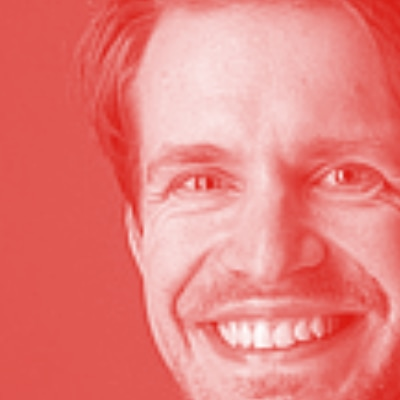
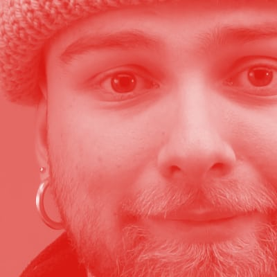
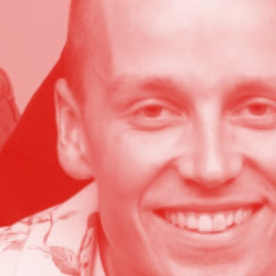
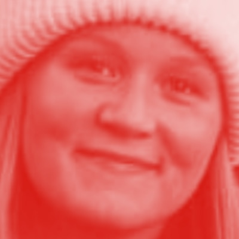
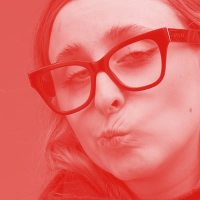
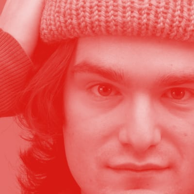
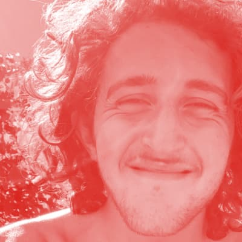
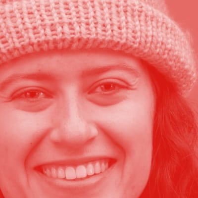
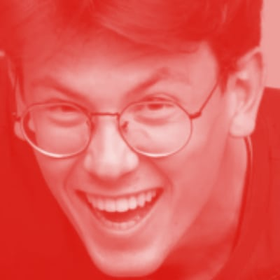
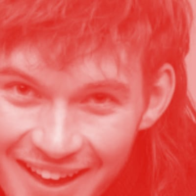
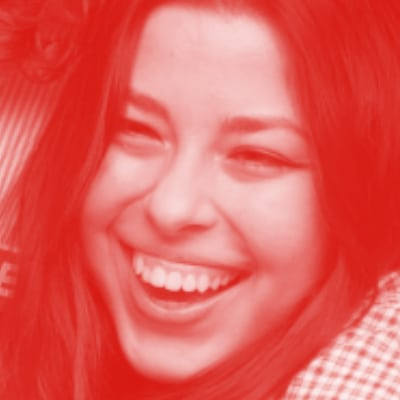
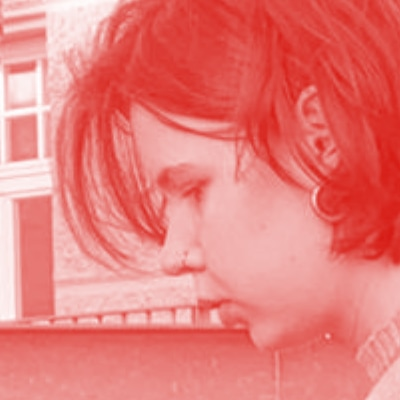
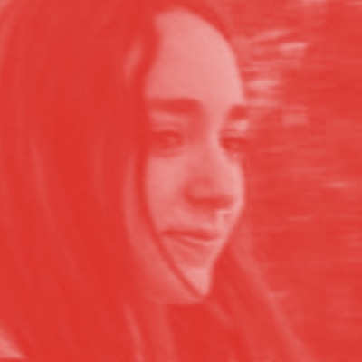
WORKSHOPS
2025, Sustainability Festival, UniBz, Zero Impact Agenda
2025, Sustainability Festival, UniBz, Tote Lab: Unique and sustainable bags
2024, UniBZ, Workshop, Till Wolfer, XYZ Karts
2024, UniBZ, Workshop, Refunk, Experimenting with reused object
2024, Fashion for Future, REX Bressanone, Sewing bags Workshops
ACCADEMY
2025, Presenting the project inside the course "Laboratorio di Eco Social Design" - Cerri, Vacca - University of Florence
2025, Paper presentation at the conference "HOPE: reclaming the future", by Design and by Disaster, UniBz
2024, Sharing our discovery with the HFBK University in an online lecture